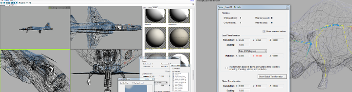

open3mod is a free, Open Source 3D model viewer for Windows.
It leverages assimp's import and export abilities and adds a modern, tabbed UI that makes it easy to quickly inspect models.
Download from open3mod.com
Developed as a separate project, open3mod has now (as of June 2014) replaced the old assimpview.